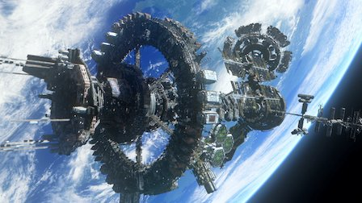

☰ open

Tops
- In de serie gebeuren veel onverwachtse dingen, Dat is echt leuk.
- De serie heeft veel actie. Je gaat er niet in slaap valllen.
- Er zijn veel seizoenen en afleveringen dus je kan genoeg kijken.
- De acteurs zijn leuk en spelen heel goed.
- De set is perfect en het ziet er heel goed uit.
- Er zitten cliffhangers in wat leuk is maar op het moment dat je moet wachten op een nieuw seizoen is niet :P
- Er zit genoeg variatie in de seizoenen niet alleen maar hetzelfde.
- Dingen zijn ingewikkeld maar ook wel leuk dat je dan je best gaat doen om het uit te zoeken..
- Het blijft gewoon leuk om te kijken omdat het zo spannend is.
- Eigenlijk heb ik geen tips alleen maak meer afleveringen.
